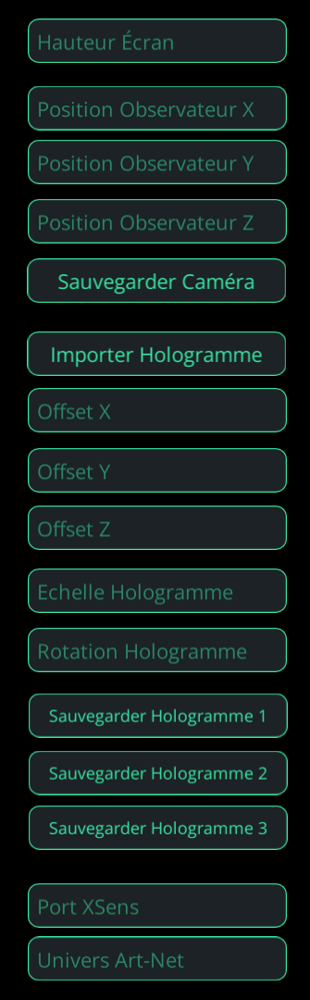

Hologramme
Projet commandité par la société Coop'art, une coopérative artistique et culturelle en Haute-Loire, basée au Puy-en Velay. Nous avons eu pour mission de créer un logiciel permettant de pouvoir projeter un hologramme sur du tulle, pour de futurs spectacles.
Le logiciel à été réalisé sur Unity et intégrait différentes technologies pour permettre la création de projections holographiques en temps réel intégrant de la motion capture et un système de contrôle appelé Art-Net.J’étais le programmeur de l’équipe. J’ai donc développé/inclus les technologies de projection holographiques ,la technologie de motion capture Xsens, le système de contrôle via la technologie Art-Net, l’outil de création et d’exportation d’hologrammes, l’importation des hologrammes, ainsi que l’interface qui a été conçue avec les membre de l’équipe.
Une démo du logiciel réalisé par mes partenaires Cyrielle Bracher et Inès Chtioui:
Le panneau de contrôle de l'application :
